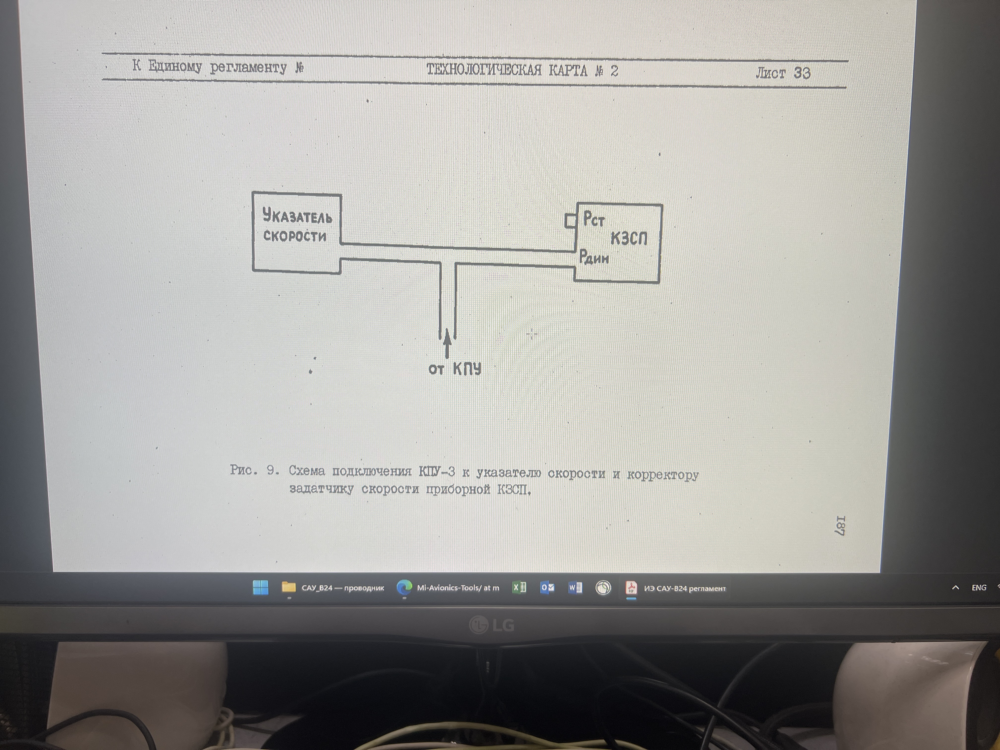

| Содержание операций | Технические требования (ТТ) |
Работы, выполняемые при отклонениях от ТТ |
|---|---|---|
| Подсоединить к КЗСП установку КПУ-3 с указателем скорости, смотри рисунок 9. И создать в динамической системе КЗСП давление соответствующее скорости Vпр=200км/ч. Нажать кнопку-табло "ВКЛ" на пульте управления канала тангажа и кнопку "СТАБИЛИЗАЦИЯ СКОРОСТИ" на центральном пульте лётчика. Поворотом шкалы ручки центровки на пульте управления канала тангажа установить стрелку индикатора нулевого в среднее положение. Заметить положение шкалы.Изменить при помощи установки КПУ-3 значение воздушной скорости на 30км/ч в сторону увеличения(уменьшения) и поворотом шкалы ручки центровки на пульте управления канала тангажа против часовой стрелки (по часовой стрелки) установить стрелку индикатора нулевого в среднее положение. Замерить величину угла поворота шкалы ручки центровки от ранее замеченного положения. Полученное значение угла поворота шкалы и передаточное число должны соответствовать техническим требованиям.Отключить канал тангажа и стабилизацию скорости кнопкой-табло "ОТКЛ" на пульте управления канала тангажа. Угол поворота шкалы ручки центровки 4,5° ±1.5°. Передаточное число 0,15 ±0,06 град / км/ч. | Угол поворота шкалы ручки центровки 4,5° ±1.5°. Передаточное число 0,15 ±0,06 град / км/ч Передаточное число в градусах угла танга-жа на км/ч подсчитывается по формуле: i = α /30 град / км/ч где: α - величина угла поворота шкалы ручки центровки, град; 30 - изменение приборной скорости, км/ч | Нажмите кнопку-табло "ОТКЛ" на пульте управления канала тангажа. Нажмите кнопку-табло "ВКЛ." на пульте управления канала тангажа и кнопку "СТАБИЛ. СКОРОСТИ" на левом переднем пульте летчика. Поворотом шкалы ручки центровки на пульте управления установите подвижный индекс нулевого индикатора в среднее положение. Заметьте положение шкалы ручки центровки. Измените значение приборной скорости в сторону увеличения на 30 км/ч от исходного значения 200 км/ч. Поверните шкалу ручки центровки на пульте управления против часовой стрелки на угол 4,5°. Поворотом подстроечного резистора "ДК" на пульте управления подвижный индекс нулевого индикатора установите в среднее положение. Плавно измените значение приборной скорости на 30 км/ч в сторону уменьшения от исходного значения 200 км/ч Поворотом шкалы ручки центровки по часовой стрелке установите подвижный индекс нулевого индикатора в среднее положение. Определите угол поворота шкалы ручки центровки от первоначально замеченного положения. Угол поворота шкалы должен быть в пределах 4,5° +-1,0° |

ОШИБКА: файл 44.JPEG не найден рядом с p012.html (проверь имя/регистр/папку).Формула (как в карте): μ = α / ΔV, где α — угол поворота шкалы ручки центровки (град), ΔV — изменение воздушной скорости (км/ч).